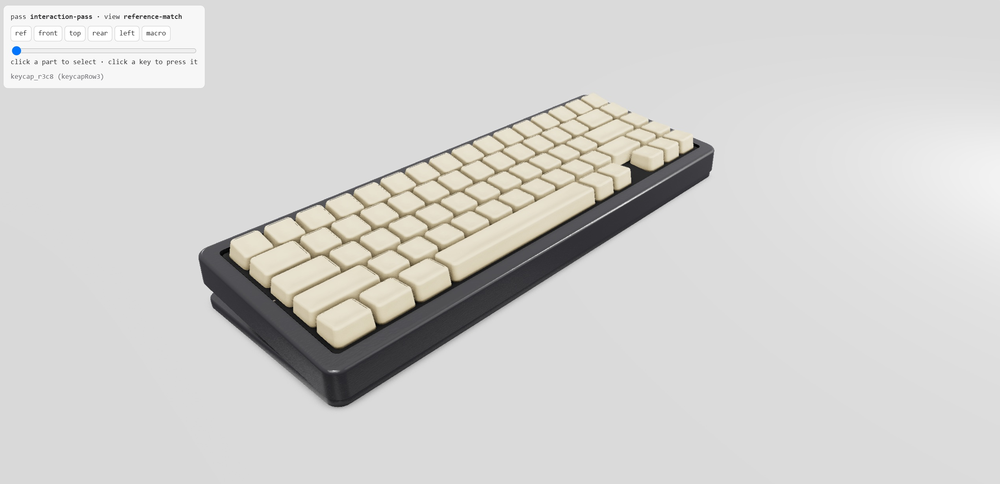

img2threejs｜用 Codex / Claude Code 從參考圖生成程式化 Three.js 3D 模型
一句話摘要
img2threejs / Three.js Object Sculptor 這條工具線，目標是讓 Codex、Claude Code 或 OpenCode 依照單張物件參考圖，先建立物件規格與品質關卡，再用 Three.js 程式碼重建可互動、可動畫化的 3D 物件；它適合做瀏覽器原型、遊戲道具與課程示範，但不是從照片直接抽出精準 mesh 的 photogrammetry 工具。
原文：
https://www.facebook.com/groups/1713764039757273/posts/1773188140481529/
早期 GitHub：
https://github.com/vinhhien112/Three.js-Object-Sculptor-Codex-Plugin
2026-07-27 補充 GitHub：
https://github.com/img2threejs/img2threejs
---
原文重點
Codex 中文社群貼文引用 GitHub 專案並附上 Om Patel 的貼文截圖。截圖主張可整理為：
- 用 GPT‑5.6 SOL / Codex 類模型打造工具，將任意物件照片重建成 3D 模型。
- 與手工建模或掃描相比，只需提供圖片，就能把物件轉為 Three.js 程式碼模型。
- 輸出是由程式碼撰寫的 procedural 3D，而非單純貼圖或下載模型。
- 專案開源，因此可整合進自己的專案。
- 作者以船隻參考圖測試，認為對「純程式碼構成」的結果來說相當出色。
Facebook metadata 擷取到的原文補充是：「有興趣的朋友參考看看」，主連結指向 GitHub repository。
---
GitHub / Brave Search 查證
早期 Facebook 社群案例指向 `vinhhien112/Three.js-Object-Sculptor-Codex-Plugin`；2026-07-27 Threads 補充則指向 `img2threejs/img2threejs`，後者 README 與 ROADMAP 更完整，並將專案定位為 image-to-procedural-Three.js 的 agentic pipeline。GitHub API 檢查時顯示：
- repository：`img2threejs/img2threejs`
- 語言：Python
- license：Apache-2.0
- GitHub 描述：把參考圖中的物件重建為 code-only、procedural、quality-gated、animation-ready 的 Three.js model
- README 提供 live demo gallery，且說明每個模型都是 generated code，在瀏覽器中即時運行
- README 明確說明：不是 photogrammetry、不是從單張圖抽出完美 mesh、也不是下載 art pack，而是引導 agent 走「規格化、分階段雕塑、截圖比對、vision review、自我修正」的程式化建模流程。
這表示社群貼文的方向大致成立，但「拍任何物件照片就能重建為完全真實 3D 模型」需要降溫理解：目前更精準的說法是「用 Codex / Claude Code 依照片推論並生成可用的 procedural Three.js 近似模型」。
---
2026-07-27 補充：Shawn C Threads 與 img2threejs 組織版 repo
Shawn C 在 Threads 補充分享 `img2threejs/img2threejs`，把這個方向描述為「一張參考圖 → 2D 圖像結構分析 → Three.js 程序化模型 → 瀏覽器即時互動」。貼文中使用「Codex 5.6」這個說法；Brave Search 可找到 OpenAI / Codex 相關 GPT-5.6 資訊，但本文不把社群貼文中的版本稱呼當成唯一官方產品名，重點放在 repo 本身可查核的 workflow。
Threads 擷取到的作者補充包含：原連結一開始被截斷，後續補上完整 GitHub 連結；對「直接用 Codex 做到嗎？」的回覆是「對喔，直接讓 Codex 安裝就好了」。這可視為社群實作經驗，但是否可在欒帥環境穩定重現，仍需實際 clone / 安裝 / 跑 demo 才能確認。
GitHub API 與 README 查核到的重點：
- repository：`img2threejs/img2threejs`
- 描述：把參考圖中的物件重建為 code-only、procedural、quality-gated、animation-ready 的 Three.js model。
- 授權：Apache-2.0。
- 主要語言：Python。
- 截至擷取時約 6.7k stars、517 forks、27 open issues；此數字會變動。
- README 寫明可在 Claude Code、Codex 或 OpenCode 下運作，屬 agent-agnostic skill / pipeline。
- 不是 photogrammetry、不是 mesh extraction、也不是下載 art pack；輸出是 `THREE.Group` factory / TypeScript 程式化模型，搭配 runtime hierarchy、pivots、sockets、colliders 等動畫/互動結構。
- Live demo gallery： https://img2threejs.github.io/img2threejs-showcase/
圖片說明：Threads 影片封面畫面幾乎只有中央播放鍵與淡色介面背景，左上可見「正在思考」字樣；可作為原貼影片證據，但不足以判斷實際生成品質。本文的技術判讀以貼文文字、作者補充與 GitHub README 為主。
---
2026-07-30 補充：img2threejs 的 Threads/GitHub 熱度

2026-07-30 另一則 Threads 再次分享 `img2threejs/img2threejs`：主張可把圖片轉成純程式碼 Three.js 3D 物件。GitHub 查核顯示該 repo 仍是公開專案，主軸是 image-to-3D / Three.js 生成工作流；這與本篇原先收錄的「用 Codex 寫出中文可互動 Three.js 物件雕塑器」屬於同一條路線：把 3D 需求轉成可檢查、可迭代的 Web 程式碼，而不是只輸出不可編輯的影片或圖片。
圖片可見度有限，只能確認它是 img2threejs 相關分享截圖，不能單靠截圖證明模型生成品質；仍需以 GitHub demo、README、實際本機執行結果驗證。
### 對課程的補充用法
- 用 img2threejs 產生初版 3D 程式碼。
- 交給 Codex / Claude Code 加互動控制、材質參數、燈光與 UI。
- 用瀏覽器驗證：旋轉、縮放、碰撞、陰影、FPS、行動版可用性。
- 把「圖片轉 3D」定位成原型工具，不要直接當最終美術資產。
---
工作流拆解
README 描述的流程比一般 image-to-3D 更工程化：
- 檢查圖片是否適合 procedural reconstruction。
- 做 complexity assessment 與品質契約。
- 產生 `ObjectSculptSpec`，描述部件階層、材質、光照、pivot、socket、動畫錨點、破壞錨點與品質目標。
- 分階段生成：blockout、結構、形體 refinement、材質、表面、光照、互動、最佳化。
- 在瀏覽器渲染後與原圖合成 comparison sheet。
- 透過 AI vision review 評分並回饋修正。
這種設計的價值在於把「AI 一次生成 3D」改成「AI 依規格逐層 sculpt，並以可視化比對把關」。
---
適合場景
- AI coding / Codex plugin 課程：示範 skill / plugin 如何把模型能力封裝成工作流。
- Three.js 原型：快速做遊戲道具、場景裝飾、產品概念物件、互動展示。
- Agentic coding 練習：讓學生觀察規格、品質關卡、瀏覽器截圖驗證、AI vision review 如何串成閉環。
- 創意 demo：將一張船、車、樹、機械零件或風格化物件圖片，轉成可改程式碼的 browser prop。
---
限制與風險
- 不是 photogrammetry：無法保證從單張照片得到精準尺寸、隱藏背面或 production-ready mesh。
- 輸出主要是 Three.js code factory 與 spec，不是預設 GLB / FBX 檔案。
- 需要 Codex 本機 plugin 支援與 Three.js 專案環境；安裝方式可能隨 Codex plugin 系統變動。
- 品質高度依賴提示、參考圖清晰度、模型能力與多輪修正；社群截圖中的模型名稱與能力主張需以當下實際可用版本為準。
- 若用於商業素材，需要確認參考圖授權、品牌外觀、肖像權與衍生模型使用權。
---
對 AI 學習雷達的保存價值
這篇值得收錄，因為它代表 agentic coding 從「寫網頁 / 修 bug」往「可驗證的程序化內容生成」延伸。重點不是單純把圖片變 3D，而是把建模拆成可檢查的工程流程：spec、階段任務、render、comparison、vision review、修正。這種模式未來可套用到更多生成式設計任務，例如 UI 還原、動畫素材、教具模擬、品牌展示物件與課堂互動 demo。